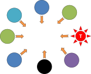
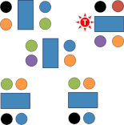

Teacher roles
 |
We all take on different roles in our lives (teacher, dog-walker,
cook, gardener, advisor, waiter etc.) and the classroom is no
different.
In our classrooms, however, we need to be aware of what role we
adopt and make sure it is appropriate to what we are doing and to
our aims.
This is not easy to achieve.
The main issue here is an old truism:
We cannot teach a language but we can create an environment in which it can be learned.
 |
A test to start |
 |
Task 1:
Here are some teacher activities. Look at the list and
see if you can think of a one- or two-word description for the
teacher's role. Click on the table when you have an answer. |
We'll look at each role in the order in the table.
- Assessor

You can be a formal assessor (setting and marking tests and homework and so on).
And you are an informal assessor all the time in the classroom asking questions of your students such as
What does .... mean?
What's the plural of ... ?
Who gave the money to John?
etc.
and asking yourself questions like:
How are they doing?
Is this material working?
Have they understood the key meanings?
Can I move on or should I repeat and explain again?
etc.
You need to assess the learners, their progress, the materials, the lesson and yourself.
For more, see the guide to asking good questions linked in the table of related guides at the end.
Simply listening to what your learners are saying is also an assessment role, even when you are mostly interested in the content rather than the form.
The assessor role can be quite intimidating for some learners because they feel they are being continuously judged. It's as well not to overdo it. - Contributor

There are many times when the teacher wants simply to be part of the class and not in charge of the class. For example, you may take part in a brainstorming session and your opinion may not be more valuable than anyone else's. You are simply contributing, not leading or managing. - Counsellor

Knowing your learners' needs will help you to advise them and lead them to effective study and learning skills. Additionally, in this role, you may have one-to-one meetings with learners to discuss their progress and any concerns they have.
Pastoral care in many institutions also falls on the teachers' shoulders. - Diagnostician

This involves being able to spot, analyse and explain learners' errors. There is a guide to handling error on this site (linked at the end).
Whenever a learner makes an error, you should ask four questions:
What sort of error is this?
Why did it happen?
Does it need to be corrected?
Do I need to correct it or can the learner or a colleague correct it? - Manager

This is to do, mostly, with teacher talk and getting things like instructions and repair routines efficiently and comprehensibly done. For more, see the guide to teacher talk linked at the end.
Classroom management also includes the handling of aids, the arrangement of furniture and factors such as heating, lighting and ventilation. - Disciplinarian

With younger learners in particular (but not only with younger learners), telling someone off for breaking the rules or the class contract is something you will have to do from time to time.
Remember, however, that if everyone has signed up to a class contract, it is often possible to allow the class and the learners to police themselves. - Facilitator

Often, learners need just a little help to get started on a task or to get on with it efficiently. Your role here is to facilitate (i.e., make things a little easier) by nudging and encouraging, not, necessarily, by giving them the right answer (that's next).
Being a facilitator is something you can only do if the tasks you set are at the right level. It's a key role and means you can support the learners' efforts. - Knower

There are many times when you have set a task or a question to answer that you have to be the arbitrator concerning what's right and what's wrong. Learners often expect that but they also expect you to be fair and clear.
This role includes that of what is known as a more knowledgeable other, someone who can provide a judicious amount of information and help at exactly the right time so that learners can complete tasks satisfactorily. - Language resource

You are a walking, talking grammar book and dictionary for your learners. This is only one reason you should be something of an expert in the structure of the language, its lexicon and its pronunciation.
If you allow yourself to play this role too often, two bad things happen:- your students will not develop the ability to use other resources such as grammars, style guides, dictionaries and the web
- you will spend too much time talking rather than encouraging your learners to find things out or work out rules for themselves
- Monitor

There are times when you only need to check that people are on task and doing what you want (i.e., that your instructions worked). At other times, monitoring is part of managing but it's also part of assessing because you should be actively listening to what the learners are saying or seeing what they write.
Feedback is what you do with the data you have collected. - Narrator

A common role for the teacher to take is that of a story teller or narrator. We often do this when we want to introduce a text, skill or language item in a clear and personal context. Learners are very often quite interested in their teacher's experiences. - Relationship builder

Rapport between you and the learners and between the learners is an important part of creating and maintaining a positive learning atmosphere. You have to take the lead by treating everyone fairly and not allowing prejudice or exclusion to occur.
Setting an example by being approachable, pleasant and inclusive is just the beginning. - Methodologist
When you are looking at materials and considering whether they will fit with your syllabus, your teaching style and your learners' needs, you are assessing things methodologically. That means knowing a bit about methodology. See the guide linked at the end. - Planner

Obviously, the teacher must be a good planner to make sure that the class get what they need, in the right order and at the right level.
But planning doesn't stop when teaching begins. No lesson plan is perfect so it is important to plan as you go, looking forward to the next stage and seeing if it needs changing, moving, delaying or abandoning. - Designer
When you are making your own materials, you need to think carefully about whether they are error-free and fit for their purpose as well as being attractive and accessible. There's a guide, linked at the end. - Reflector

Good teachers are constantly reflecting on what they have done and sometimes on what they are doing right now. Part of being a professional is being able to introspect and be honest with yourself about success and failure as well as being able to plan to avoid the second and enhance the first.
If you want, you can take a pair of short matching tasks to see if you can match the role to what a teacher is saying or thinking.
Changing roles |
Inexperienced teachers usually feel quite comfortable taking on a
narrow range or roles: planner, manager and knower, for example.
However, a good developmental process is to look at the other
possible roles in the list of nine and decide to take on a different
one each week at some point.
|
|
Task 2:
What are the advantages to having a range of roles? Take a little time and see if you can think of two good reasons. Then click here. |
- Task type
Some tasks, such as dictation activities, re-grouping for feedback and so on require you to be an active manager. That's the appropriate role.
Other tasks, however, require other roles. For example, when learners are writing a short text, they may need help in finding the right word and then your role is knower and facilitator.
Some tasks, such as extended role plays or problem-solving activities may need you to act in a number of roles: facilitator, knower, monitor and assessor so the ability to take on these roles will be very helpful. - Variety
If the teacher is always the knower and the manager, lessons can become quite boring and predictable. Variations in the teacher's role lead to variations in interactions and activities. - Autonomy
Learners need some independence because the teacher will not always be with them. If the teacher's role is limited to knower and assessor, learners will not develop inferencing and research skills and will not develop the skill of good guessing, either. - Helpfulness
Simply put: the more roles you can take on, the more you can help your learners. That's professionalism.
Signalling your role |
There is little point in being able to take on a variety of roles if the learners are not aware of what they are. Here are some simple ways of showing what role you are in. They may appear simple, of course, but it is quite surprising how often even very experienced teachers fail to signal what role they are in.
 |
Position |
Where you are in a room is a strong indicator of what you are intending to do, i.e., what role you are in. Obviously, if you are teaching online, some of these positions in the classroom will have to be virtual rather than physical but the same considerations apply whatever the mode of delivery of the lesson.
 |
Task 3:
Here are some examples. What role does the position of the teacher imply to you? The teacher's positions are indicated by the symbol on the left. Click on the diagrams to see some comments. |
 |
If you are
behind your desk facing the learners, you are signalling
that your role is a manager, an assessor, a presenter or
a knower. If you are writing on the board, then
you are in presenter mode.
You are certainly not signalling that you want to be involved or facilitate because you have allowed a barrier to exist between you and the class (two barriers if you include the learners' tables). |
 |
Simply
moving to the other side of the desk and perhaps leaning
against it or sitting on it removes the barrier and
allows you to be a narrator or, if you can hear everyone
clearly, a monitor.
It's also a good place to signal that you are a resource because anyone can ask you a question and you can make eye contact with all the learners. It does not allow you to signal that you want to be a contributor or facilitator, however, and the position still implies a management role of some sort. |
 |
This is where you should be when you do not want a
role at all. It is clear from the diagram that
this is a learner-centred phase of the lesson with two
learners presenting to or quizzing their colleagues.
You are a non-participant. It is unlikely that your presence will be ignored, of course, especially if you are standing so lower it by sitting down. The class is likely to be aware that you may be assessing how things are going, particularly if you are taking notes. |
|  |
This is a very different arrangement with no
barriers between learners and the teacher or each other.
Everyone can contribute to the whole group so your role
is contributor and you need to be very careful not to
dominate or play the knower.
|
|  |
In this classroom, learners are working in groups of
4 and your first position means that you are in the
role of facilitator or resource, providing a little help
to the group in the top right but probably being able to
hear the other two nearest groups.
If you watch the graphic, you'll see how this facilitator role works as you move around. |
|
In this classroom, learners are working in pairs and
you are in monitor mode. You have positioned
yourself where you can see and hear all the pairs and
are ready to intervene if they go off task or encounter
a difficulty that will block their progress.
|
There are, naturally some other possible positions and arrangements of learners (see the guide to grouping, linked below, for more). The moral of the story is clear, however, always think about where you should be and what signal your position sends to the learners about your role.
Voice tone |
Variation in voice tone signals intention and role just as much
as position in the room, just less visibly.
Keeping to a single voice tone is both confusing and dull at the
same time so it's an area all teachers need to develop. The
following could be extended but covers the main issues:
- Loud and clear
- Clearly this is in the role of management. Your voice
tone needs to be loud enough to be easily heard and crisp and
clear when giving instructions or managing the class.
There's no need to shout but mumbling will get you nowhere.
Some people find a conventionalised signal such as a hand clap or a loud call of Right! is an effective way of signalling that some form of management routine is on its way.
The same tone, slightly quieter, can be used when in the role of assessor, correcting and suggesting and in the roles of knower and language resource. - Intimate
- Lower in volume and softer, this is the tone to adopt when
working with pairs or very small groups. It's the tone to
adopt when you are a facilitator and helper.
It is also often effective when you are playing disciplinarian, getting quite close to the culprit and using a friendly but firm tone. - Raconteur tone
- This is what you need to work on if you aren't a natural story teller. Your tone needs to be quite quiet so people are forced to attend carefully but you must maintain clarity and articulate well.
Whatever tones you adopt, the effort needs to be made to be
consistent and clear in your intentions. You do not want
learners thinking:
Is this a new instructions, the last one
rephrased or an aside to someone else that I can ignore?
Try a final (and very similar) short matching test on teacher roles.
| Related guides | |
| asking good questions | for the guide to getting the most from questioning |
| what is methodology? | for the essential guide to a complicated area |
| being clear | for some advice about getting your message across clearly, simply and unambiguously |
| grouping learners | for the guide to possible ways of grouping and what sort of tasks they fit |
| classroom arrangement | for a guide to the possible ways a classroom can be set up and what (dis)advantages setups entail |
| teacher talk | for a guide to what to say and how to say things |
| handling error | for an essential guide to dealing with mistakes |
| planning | for an essential guide to planning lessons |